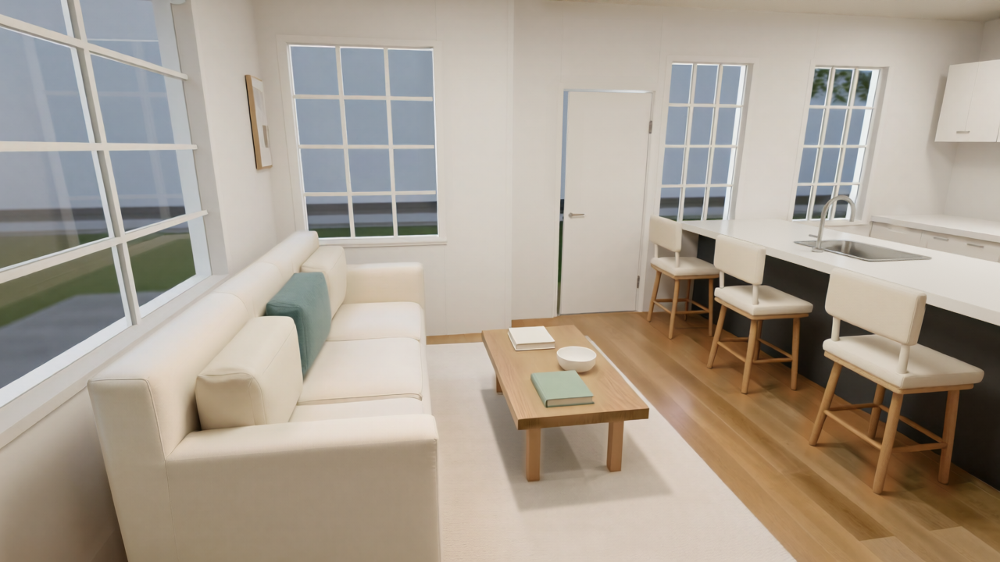
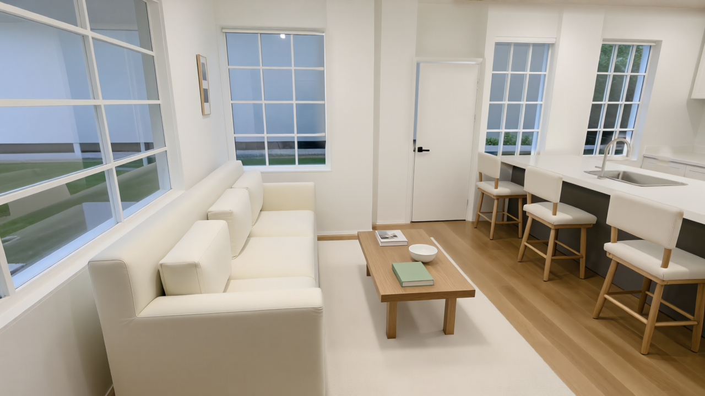
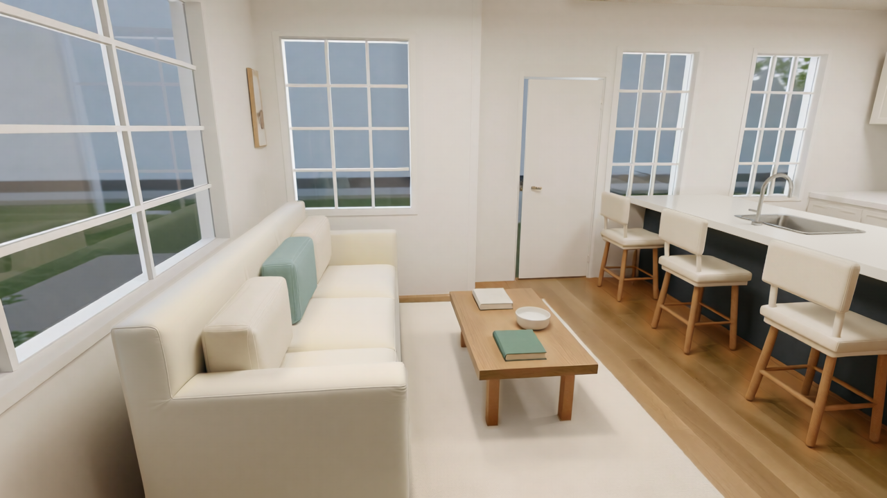

A better-looking image is not necessarily a better representation of a room. That became the central lesson of our Blender and ComfyUI test: the wood could look more convincing while a door quietly changed, and stronger surface detail could arrive with the wrong cushion color.
We finished with two approved interior views, a saved workflow and a record of the corrections. The useful result was a controlled architectural visualization. It was not automatic floor-plan conversion, a dimensionally verified model or an image indistinguishable from a photograph.
{kind=link}

What we actually tested
The source was an existing Blender apartment model with documented links to a manually traced raster floor plan. This study focused on its living-room and kitchen area, using two nearby camera positions. We did not test an automatic system that reads a new plan and builds the apartment from scratch.
The earlier tracing record estimated roughly 6-9 cm of uncertainty, with vertical dimensions inferred. The working kitchen also included intentional design revisions. We therefore treated the model as our chosen visual reference, not independently surveyed ground truth or an exact reconstruction of the original drawing.
That distinction matters. We could check whether an image retained a window, sofa or fixture relative to the working model. We could not infer construction accuracy from how convincing the image looked.
Give Blender and ComfyUI different jobs
Blender held the editable geometry: walls, openings, furniture, sink and camera. ComfyUI generated alternative appearances from rendered references and combined selected improvements with approved pixels.
This made corrections understandable. Moving a faucet in Blender changed its position in the model and in subsequent views. Asking an image model for a nicer faucet could instead change its shape, mounting side or relationship to the basin.
Our generation path used Qwen-Image-2512 with the 2602 version of Alibaba PAI's Fun ControlNet Union. The ControlNet model card documents support for conditions including Canny and depth. In our test, those controls guided the image; they did not enforce a geometric constraint.
Start with a reference you would defend
Before pursuing realism, we corrected four visible issues in the source model. A green book was moved fully onto the coffee table. The nearest sofa's arm, back and base were rebuilt into a continuous frame. A flat sink placeholder became a recessed basin with a curved faucet. The faucet was then moved to the opposite side of the basin following review.
These were source-model corrections and design decisions. They should not be counted as failures introduced by ComfyUI.
Each change went into a separate working revision. The original files were retained, and the corrected model was rendered from the second camera. That gave us a way to distinguish an actual model repair from a fix that only looked right in one image.
The layout pass: render first, guide second
The preliminary Qwen pilot compared text-only, depth-guided and Canny-guided outputs against one camera reference. Our visual review favored the edge-guided direction for this scene. That is a case-specific observation, not evidence that Canny generally beats depth.
For the refined workflow, we rendered both a normal reference image and a temporary object-separation pass. In the latter, objects received different grayscale emission materials to expose boundaries without relying on the scene's lighting. We then extracted Canny edges from both images and combined them using a screen blend.
The reference image was also encoded through the VAE and used as the image-to-image starting point. This retained more of the room than beginning from an empty latent. The guide helped identify boundaries that mattered, while the reference carried the existing composition and appearance.
The practical graph was:
- Load the reference and object-separation image.
- Extract and combine their Canny edges.
- Apply the matching ControlNet to the text conditioning.
- Encode the reference with the matching VAE.
- Sample at restrained denoise, decode and inspect.
- Composite approved details back wherever generation drifted.
We used native ComfyUI nodes for this path. Compatibility still depends on the installed version and the exact model files; a node name alone is not a reproducibility record.
Settings that produced these results
The images were generated locally on an NVIDIA RTX 3090 with 24 GB of VRAM, using Blender 5.2.0 LTS and ComfyUI 0.37.0. This describes the tested machine, not a minimum hardware requirement.
| Setting | Layout refinement | Stronger material pass |
|---|---|---|
| Resolution | 1280 x 720 | 1280 x 720 |
| Model | Qwen-Image-2512 FP8 | Same |
| ControlNet | Fun ControlNet Union 2602 | Same |
| Configured sampler steps | 50 | 50 |
| Sampler / scheduler | Euler / simple | Euler / simple |
| CFG / sampling shift | 4 / 3.1 | 4 / 3.1 |
| Denoise | 0.30 | 0.55 |
| ControlNet strength | 0.70 | 0.80 |
| Control interval | 0 to 1 | 0 to 1 |
The working files were qwen_image_2512_fp8_e4m3fn.safetensors, qwen_2.5_vl_7b_fp8_scaled.safetensors, qwen_image_vae.safetensors and Qwen-Image-2512-Fun-Controlnet-Union-2602.safetensors. We used CLIP type qwen_image and the ModelSamplingAuraFlow node. These details identify our configuration; they are not interchangeable with similarly named checkpoints.
The material-pass seeds were 23092026 and 23092027 for the two views. We also tested a milder 0.38 denoise pass on the first view. It added some detail, but not enough to resolve the rendered appearance.
ComfyUI's image-to-image documentation explains that increasing denoise generally allows greater departure from the reference. Our next result showed both sides of that tradeoff.
Better materials brought unwanted edits
The 0.55 pass gave the floor and table more visible oak grain, the rug more texture and the upholstery more defined seams. It also changed things outside the material brief. The first view altered the door hardware and closed the narrow door gap. In the second, the blue-green cushion became cream. Some stool details shifted as well.
Those changes were not acceptable just because the image looked more finished. Nor did ControlNet strength 0.80 prevent them.
{kind=link}

Our solution was selective compositing. We made masks from the Blender geometry for the sofa, floor, rug and table regions, then excluded protected details. The final blend retained the approved architecture, sink, faucet, stools, accent cushions, books and bowl while accepting useful material changes elsewhere.
The masks required review too. Overlapping geometry could introduce unintended regions into an emission mask, and a mask based on a crisp model boundary did not always cover a slightly shifted generated edge. Thresholding, expansion or contraction, and soft blending helped, but the final boundaries still needed visual inspection for halos and doubled edges.
Check the composite, then check another view
We checked the finished images at two levels. Visually, we compared the layout, objects, colors and corrected fixtures with the approved reference. Numerically, we compared pixels outside the effective edit mask with the approved image.
For both final views, pixels outside the material-edit region differed by no more than one RGB level. The protected sink and ceiling regions matched exactly. That is evidence that the compositing preserved those image regions. It does not prove that the mask selected the right objects, that the regenerated parts retained exact dimensions or that the room is photorealistic.
The second camera used the same corrected Blender model. It showed that the sofa repair, supported book, recessed basin and faucet position carried into another view. Because the cameras were nearby, this remains a limited consistency check, not a whole-building validation.
{kind=link}

What the timing does, and does not, tell us
The recorded job elapsed times for the two stronger material runs were about 137 and 163 seconds. Those figures cover the submitted generation jobs and their initial protection outputs. Later selective compositing, Blender corrections, mask preparation and human review were separate work.
We did not measure total operator time or electricity use. The result therefore does not support a claim that a finished, checked architectural image takes two minutes, or that this workflow is cheaper than a conventional renderer. The local model jobs avoided a hosted per-image generation service, but local hardware, setup and review still have costs.
For a useful comparison with another method, record the entire intervention history: prompts, reruns, corrections, masks and selection work, as well as sampling time.
Is the result photorealistic?
Not fully. The accepted material pass is more natural than the earlier image, but the broad lighting, simplified exterior scenery and remaining smooth surfaces still read as a render. Calling it an AI-enhanced architectural visualization is more accurate than calling it a photograph.
Its value is the controlled workflow: the design lives in an editable model, requested changes can be applied deliberately, and useful generated material detail can be accepted without accepting every other alteration in the same output.
Can this turn a floor plan into a 3D floor plan?
It provides part of the process, but that is a separate test. A floor-plan-to-3D workflow would first need to interpret the drawing, confirm dimensions and openings, and create or verify an editable model. Blender could then produce an overhead or dollhouse reference for ComfyUI to refine.
We have not validated that automatic interpretation stage here, nor produced a dollhouse view in this study. A convincing 3D-looking image and an editable 3D model are different deliverables. This case supports the rendering-and-review stage after a model exists.
What to save so the process can be repeated
Keep the source revision and camera, reference and guide images, exact model filenames, full prompts, seeds and settings, raw candidates, effective masks and selected final images. Save the native ComfyUI workflow and execution record too. Workflow metadata embedded in a PNG is useful, but it does not include every external model or input file needed to rerun the graph.
We packaged our process as the internal ArchiGen Visuals skill, including a pixel-preservation check and delivery steps. That makes the tested procedure easier to repeat; it does not make this room's masks or settings automatically suitable for another project.
For your next room, begin with a reference whose geometry you understand. Identify the features that must survive. Make one controlled pass, inspect what actually changed, and keep only improvements that serve the design. The most useful output of this test was a repeatable way to make that decision.
Related reading
Write a Preservation Brief Before Enhancing an Architecture Render in ComfyUI
Evidence note
This article reports one locally documented living-room/kitchen study and two nearby final views, completed in September 2026. The final images were approved by the owner. Recorded requests, execution histories, source hashes, masks and final-file hashes support the case study. It is not a representative benchmark across floor plans, buildings, GPUs or model families. Primary product references are linked where used; the figures show our actual local outputs rather than illustrative stock images.